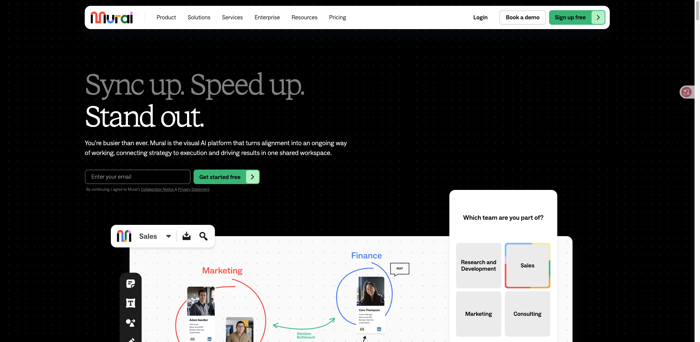

面向团队协作的可视化工作区，用模板和议程把讨论带到结论。
一场 Design Sprint：五个阶段的流程带 + 投票贴纸 + 参与者头像
Mural 的视觉语言：先把画布切成带标题的分区，再往里放便签；阶段带、投票点、引导师备注都像模板的一部分 —— 它卖的是“会怎么开”，不只是“画布多大”。

一个面向团队的可视化工作区，围绕“把一群人带到一个结论”设计：分区、计时器、投票、私人模式、引导师工具都是内置的。
官方定位强调 AI 驱动的工作流，面向研究、市场与咨询场景。